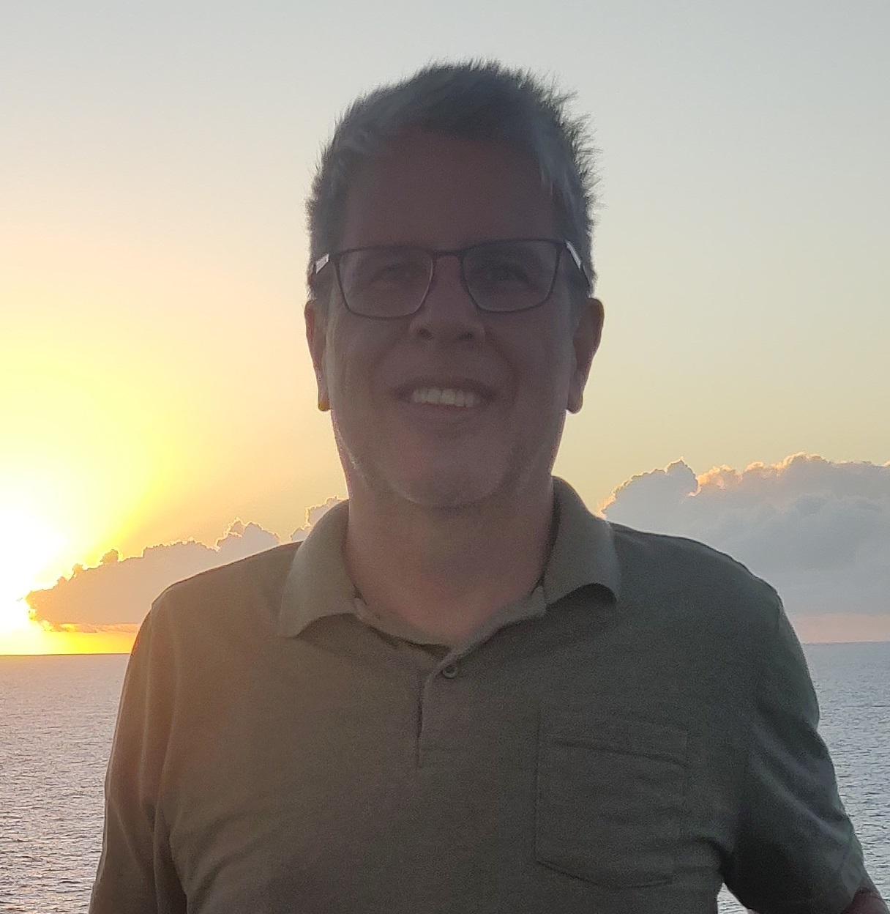

Robson Paulo da Silva | WDD 130
Hello! My name is Robson Paulo da Silva. I'm Brazilian and I live in the city of Rio de Janeiro. I like hiking in this city full of interesting options, close to forests and beaches. I also like walking, cinema, theater, circus, beach and reading good books. I am a member of the Church of Jesus Christ of Latter-day Saints and am grateful for the way It has been great to be a part of this church for me and my family.